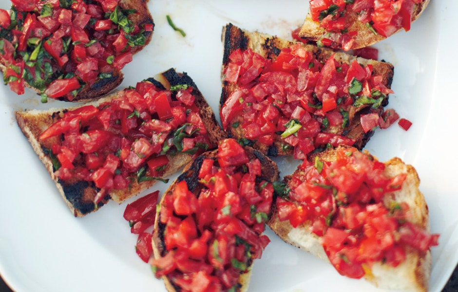

Italian Tomato Crostini

Description:
Yummy Yum Yum!!!
Ingredients:
- 2 pounds ripe tomatoes, cored, halved, seeded, chopped into 1-inch-thick slices
- 3 garlic cloves, 2 minced, 1 halved
- Sea salt and freshly ground black pepper
- 3 tablespoons extra-virgin olive plus more for drizzling
- 1 tablespoon red wine vinegar
- 1 loaf ciabatta or baguette, cut on a diagonal into 1/3 pieces
- 1/4 cup packed fresh basil leaves, coarsely chopped
Steps
- Combine tomatoes and minced garlic in a large bowl. Season generously with salt and pepper. Add 3 Tbsp. oil
and vinegar; toss to mix well. Cover and let tomatoes marinate at room temperature, stirring occasionally,
for 2 to 3 hours to allow flavors to develop.
- Rub one side of toasted bread with cut sides of remaining garlic clove; drizzle bread with oil and cut in
half crosswise. Add basil to tomato mixture in bowl and toss well. Season to taste with salt and pepper.
Arrange crostini on a platter. Spoon some tomato mixture on top of each crostini.